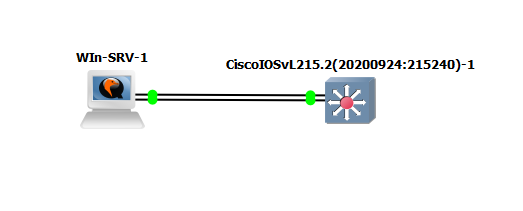
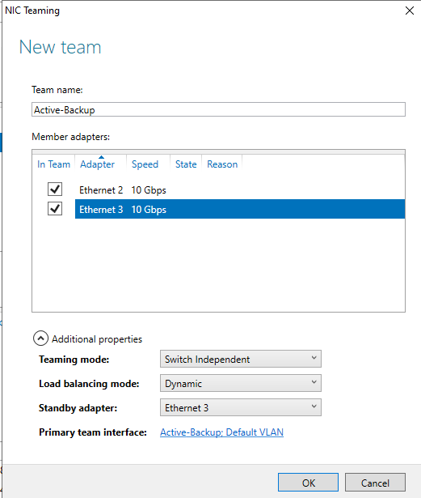
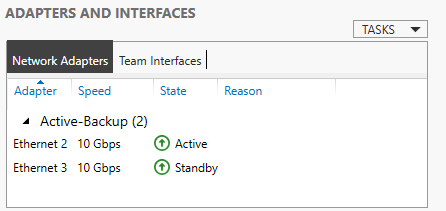

Modo Switch Independent (Windows)
Configuración de agregación de enlaces en modo independiente. Este despliegue permite asociar múltiples NICs físicas en un único equipo lógico sin requerir modificaciones ni soporte de protocolos cooperativos en los switches de la infraestructura.
Requisitos en GNS3
- 1x Máquina Virtual: Windows Server (configurada en GNS3 con 2 adaptadores de red en la pestaña "Network" de la VM).
- 1x Switch gestionable: Cisco vIOS L2 o similar.

Captura: Topología de nodos y cableado en GNS3
Paso 1: Configurar el Switch Cisco
Al trabajar en modo Switch Independent, el switch no sabe que los enlaces pertenecen al mismo equipo. Los puertos se configuran como modo acceso estándar, aplicando Spanning-Tree Portfast para asegurar una convergencia inmediata tras un failover:
Switch# configure terminal Switch(config)# vlan 10 Switch(config-vlan)# exit Switch(config)# interface vlan 10 Switch(config-if)# ip address 192.168.10.1 255.255.255.0 Switch(config-if)# exit Switch(config)# interface range gigabitEthernet 0/1 - 2 Switch(config-if-range)# switchport mode access Switch(config-if-range)# switchport access vlan 10 Switch(config-if-range)# spanning-tree portfast
Paso 2: Configurar Windows Server
- Abre el Server Manager and dirígete al apartado de Local Server.
- Localiza la propiedad de NIC Teaming y haz clic sobre la opción Disabled.
- En el panel inferior de la nueva ventana, haz clic en Tasks -> New Team.
- Asigna un nombre al conjunto (ej.
Active-Backup) y marca las casillas de las dos tarjetas de red disponibles. - Despliega el menú de Additional Properties y establece los siguientes parámetros técnicos:
- Teaming mode: Switch Independent
- Load balancing mode: Dynamic
- Standby adapter: Selecciona una de las dos tarjetas (esta actuará como reserva y permanecerá inactiva mientras el enlace principal funcione).
- Haz clic en OK para aplicar los cambios de red.

Captura: Ventana de configuración del New Team en Windows Server
🧪 Prueba de Laboratorio
Inicia la consola de comandos de Windows (cmd) y ejecuta un comando de diagnóstico de conectividad continua hacia la IP virtual asignada en el switch central: ping -t 192.168.10.1. Mientras se envían las peticiones, regresa al entorno gráfico de GNS3, haz clic derecho sobre el cable conectado a la interfaz de red activa de Windows y selecciona la acción Delete. Observarás que la transmisión apenas experimenta un retraso insignificante (perdiendo como máximo un único paquete), dado que el adaptador en Standby asume el tráfico de forma autónoma.

Captura: Panel de estado de los adaptadores reflejando la transición Active-Standby